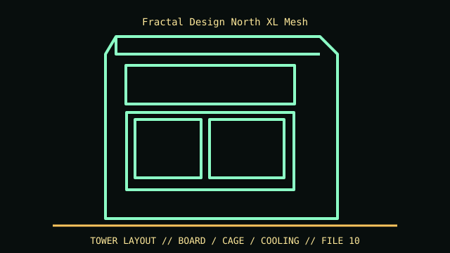

[ IDENTIFIED ENCLOSURE // NORTH XL CHARCOAL BLACK MESH (NORTH XL FAMILY) ]
Fractal Design North XL Mesh
240 × 509 × 503 mm (W × H × D); GPU up to 413 mm or 380 mm with 420 mm front radiator, and CPU cooler up to 185 mm.

VARIANT / ARCHIVAL CAVEAT: Mesh and TG finishes have different front panel; North XL is larger than North and North XL TG variants share core shell. Verify SKU and included fan hub/trays. Keep wood front slats and mesh filter clean without wetting veneer.
Mechanical specifications and fit
| Catalog identity | North XL Charcoal Black Mesh (North XL family) |
|---|---|
| Dimensions and clearances | 240 × 509 × 503 mm (W × H × D); GPU up to 413 mm or 380 mm with 420 mm front radiator, and CPU cooler up to 185 mm. |
| Drive bays / mounts | Two dedicated 2.5-inch mounts plus two 3.5/2.5-inch combination positions. |
| Board, system and compatibility | E-ATX up to 330 mm wide, ATX, microATX and Mini-ITX; front radiator, board width and GPU share the same length envelope. |
| Revision / identification | Mesh and TG finishes have different front panel; North XL is larger than North and North XL TG variants share core shell. Verify SKU and included fan hub/trays. Keep wood front slats and mesh filter clean without wetting veneer. |
Preservation and installation notes
Mesh and TG finishes have different front panel; North XL is larger than North and North XL TG variants share core shell. Verify SKU and included fan hub/trays. Keep wood front slats and mesh filter clean without wetting veneer.
E-ATX up to 330 mm wide, ATX, microATX and Mini-ITX; front radiator, board width and GPU share the same length envelope.
- Capture the complete model/SKU, serial/date label, board assembly and bay/backplane/riser identifiers before disassembly; keep matched screws, trays, carriers, feet and cables with the case.
- Check the cited manual's specific build option before transferring hardware. Published maximum GPU, drive, fan or radiator capacity may not be simultaneous when a removable cage or alternative riser occupies that volume.
- For rack and vintage systems, preserve the exact rails, shields, doors, brackets and model-specific safety instructions; do not infer compatibility from a familiar brand or physical connector shape.
Manufacturer manuals and archival sources
- Fractal Design North XL Mesh product sheetPrimary manufacturer or model-specific technical/manual reference used for the identification and mechanical data above.
- Fractal Design North XL product sheet downloadSecond product manual, manufacturer resource or established technical archive; choose the exact regional SKU and revision.
When exact dimensions depend on configuration, the text says so; verify the measured specimen before making a fit or restoration decision.